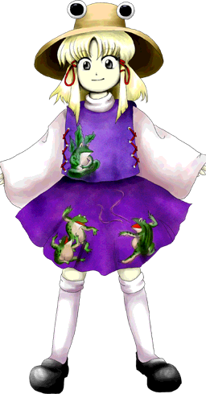

Suwako é frequentemente vista como:
Brincalhona – adora se divertir e mantém uma postura muito leve e jovem.
Sábia – apesar do jeito travesso, possui a maturidade e o conhecimento de uma divindade antiga.
Competitiva – adora rivalidades amigáveis, especialmente com Kanako.
Ela transmite a sensação de uma criança de espírito livre, mas que esconde uma aura divina extremamente poderosa.
🧠 Mente estratégica
Suwako é muito mais astuta do que sua aparência sugere:
Planeja suas ações com calma
Entende profundamente a geopolítica de Gensokyo
Sabe exatamente como manter sua fé viva
Por trás do sorriso inocente, há a mente de uma deusa que já governou nações.
🎭 Comportamento de "falsa criança"
Ela demonstra traços que misturam infância e divindade:
Gosta de jogos e festivais
Age de forma descontraída com os humanos
Pode ser surpreendentemente madura quando a situação exige
Seu jeito descompromissado é sua forma favorita de interagir com o mundo.
🌿 Conexão com a terra
Suwako tem um vínculo profundo com o solo e a natureza:
Passa muito tempo no Templo Moriya
Interage de perto com sapos e a fauna local
Protege suas terras com bênçãos e maldições
Ela prefere o ambiente montanhoso e natural, onde suas origens divinas são mais latentes.
🤝 Relação com os outros
Suwako interage de forma única com os moradores de Gensokyo:
Divide o controle do templo com Kanako Yasaka
Atua como uma ancestral e mentora para Sanae Kochiya
Trata humanos e youkais com uma simpatia quase travessa
Apesar de ser uma deusa das maldições, ela prefere a paz e a diversão hoje em dia.
Deusa nativa da terra
Suwako é a verdadeira deusa originária do Templo Moriya, passando seus dias aceitando fé, conversando com Sanae e gerenciando a montanha.
Líder oculta dos deuses de Mishaguji
Embora Kanako seja a face pública do templo, Suwako detém o controle sobre os antigos e temidos deuses-serpente da terra.
Criação de terra (Earthquakes e Topografia)
O principal poder de Suwako é controlar os elementos da terra:
Pode abrir fendas no solo e criar relevos
Invoca nascentes de água e molda montanhas
Consegue manipular a própria fundação do terreno ao redor
Esse poder a torna virtualmente invencível quando está pisando no chão.
Invocação de Mishaguji
Ela pode evocar os deuses amaldiçoados da fertilidade e da destruição, lançando maldições poderosas.
Voo
Como uma deusa pura, Suwako se move e flutua pelo ar com extrema leveza e agilidade.
Imortalidade divina
Por ser uma divindade antiga, Suwako não envelhece e sua existência depende diretamente da fé e das memórias das pessoas.
Mesmo parecendo apenas uma menina de chapéu de sapo, sua herança de deusa da terra faz dela uma das entidades mais formidáveis de Gensokyo.

Espécie:Deusa
Título:O Supremo dos Deuses Nativos (The Highest/Epitone of Native Gods)